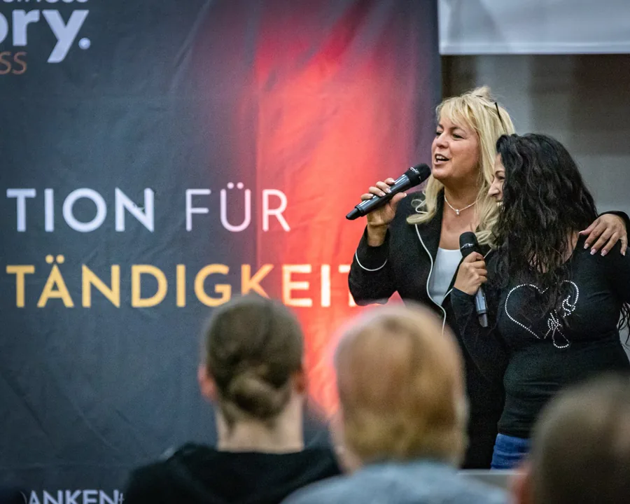

Persönlichkeit vor Perfektion.
Claudia Conen ist Expertin für menschliche Wirkungskraft im KI-Zeitalter.
Sie stärkt die menschliche Wirkungskraft in Unternehmen – damit Führung, Kommunikation und Veränderung im KI-Zeitalter Vertrauen schaffen und Menschen bewegen.

Eine Positionierung, viel methodische TiefeVorschlag
Warum Claudia?
Weil Wirkung dort entscheidet, wo KI Prozesse beschleunigt und Menschen trotzdem überzeugt, geführt und mitgenommen werden müssen.Vorschlag
Was ihre Arbeit verbindet
Ihr Schwerpunkt ist die hörbare Persönlichkeit: das Zusammenspiel von Worten, Stimme und Haltung. Stimme, Storytelling, Rhetorik und KI sind dabei Werkzeuge mit einem Ziel: Vertrauen.
Erfahrung
Seit 37 Jahren ist sie als Coach und Trainerin unterwegs und arbeitet mit Unternehmern, Führungskräften, Speakern und Teams. Heute steht sie auch als Keynote Speakerin auf der Bühne.
Haltung
Im KI-Zeitalter ist Perfektion klickbar. Persönlichkeit weckt Vertrauen.
Meine Berufung. Meine Leidenschaft.
Als junges Mädchen habe ich erfahren: Es gibt Menschen, deren Stimmen bleiben unauslöschlich im Kopf gespeichert. Wie eingebrannt.
Es ist die Emotion. Sie entscheidet, ob du unauslöschlich gespeichert bist oder ob deine Worte morgen in deinem Zuhörer verpuffen.
Da liegt die Verbindung. Im Hinzuhören. Da liegt der Unterschied zu KI.
Die Geschichte dahinter lesen
Kennst du Worte, die dich dein Leben lang gelenkt haben, als wärest du eine Marionette? Wenn ja, dann weißt du, wovon ich rede. Diese Geschichte kann ein Türöffner für dich sein.
Alles, was wir erleben, formt uns.
Die Stimmen der längst entkommenen Verbrecher hören bis heute nicht auf, in ihr zu klingen. Wie besessen hört sie hin, wenn Menschen miteinander reden.
Die Polizei-Psychologin sagt ihr, sie solle alles aufschreiben. Dann würde der Schmerz aus ihr herauskommen. Ihre Stimme würde dann zurückkommen. Sie schenkt der Kleinen ein leeres rotes Buch mit vielen weißen Blättern. Pedantisch beschreibt das Mädchen die schauderhaften unterschiedlichen Männerstimmen in diesem Buch.
Ein damals sinnloses kindlich-geschriebenes Stimmanalyse-Buch. Sie fokussiert sich darauf, den Menschen präzise zu lauschen, um die nie gefassten Täter zu entdecken und zu identifizieren.
Das Mädchen von damals, mit dem großen Drang nach Freiheit, ist ihr Leben lang beruflich selbstständig. Unbewusst ist sie fokussiert auf die Wahrnehmung der hörbaren Emotionen.
Dieses kleine Mädchen steckt heute noch in mir.
Auszug aus „Meine Geschichte“ auf der bisherigen Seite „Über mich“ · Video „Meine Geschichte“ bei Vimeo ansehen
Wie tief deine Geschichte hier stehen soll, bitte von dir freigeben (§25). Die bisherige Seite erzählt die Entführung mit allen Einzelheiten; hier steht bewusst nur ein Auszug.

Erfahrung, die man sehen und hören kann

- KategorieExpertin für menschliche Wirkungskraft im KI-Zeitalter – bekannt als „Die Umsatzstimme“.
- PraxisSeit 37 Jahren als Coach und Trainerin unterwegs. Das Mädchen von damals, mit dem großen Drang nach Freiheit, ist ihr Leben lang beruflich selbstständig.
- In UnternehmenIn unterschiedlichsten Unternehmen vermittle ich die verblüffende Macht der Stimme und die Erkenntnisse, dass Worte magisch wie ein Magnet sein können und so gefährlich wie ein Messer in der Brust.
- Auf der BühneBühnenausschnitte und Keynote-Themen stehen auf der Keynote-Seite. Claudia auf der Bühne
- BelegeStimmen von Auftraggebern und Teilnehmenden, wörtlich und mit Quelle. Stimmen lesen und ansehen
Qualifikationen, Ausbildungen und Mitgliedschaften mit Jahr oder Nachweis (z. B. KI-Managerin IHK): bitte von dir.
KI kann Inhalte erzeugen. Wirkung entsteht durch den Menschen.
Mit über 50 habe ich KI entdeckt – nicht um zu ersetzen, sondern um Zeit zu gewinnen. Um näher und intensiver mit Menschen zu arbeiten.
Heute verbindet sie Kommunikation und künstliche Intelligenz. Denn KI kann berechnen, doch Persönlichkeit begeistert, fasziniert und berührt.
Arbeitsweise
Nutze KI, weil Fortschritt sich nicht aufhalten lässt – und nutze das, was niemand außer dir besitzt: deine wirkungsvolle Persönlichkeit, um dich unersetzbar zu machen.
Erst den persönlichen und unternehmerischen Kern klären. Dann die Botschaft formen. Anschließend die Wirkung verkörpern. Erst danach KI gezielt als Verstärker einsetzen.
Ich befähige dich und dein Team zur vollen Wirkungskraft.
Wofür Claudia Conen steht
- Berühre das Herz.
- Bleib im Kopf.
- Perfektion ist klickbar.
- Persönlichkeit weckt Vertrauen.
- Der Mensch ist das Unikat.
- Überall ist Bühne.
- Achtsamkeit.
Fortschritt nutzen, um mehr Zeit für Menschlichkeit zu gewinnen.
Veröffentlichungen und Auftritte
Bücher
Ein eigenes Buch und fünf Bücher, an denen ich mitgewirkt habe.
- 2024
#CatchUpCall. Experten im Scheinwerferlicht und die Geheimnisse für erfolgreiche Online-Events
Mitautorin. Herausgegeben von Alexander Niggemann und Ute Gütschow.
- 2018
Durchbruch! 45 inspirierende Geschichten aus dem Leben
Mitautorin. Herausgegeben von Dr. Stefan Frädrich und Alexander Müller, GEDANKENtanken.
- 2022
Brainself. Es geht um dich selbst
Mitautorin. Gemeinschaftswerk mehrerer Autorinnen und Autoren. Zum Buch
- 2023
Aus der Krise ins Happy-End
Mitautorin. Herausgegeben von Monica Deters.
- 2022
Der große Coach-Guide. Mit wem deine Träume wirklich wahr werden
Mit einem Beitrag vertreten. Von Monica Deters.
- 2022
Trauerreden Ratgeber. Todsicher einzigartig wie der Mensch selbst
Autorin. Taschenbuch und E-Book. Zum Buch
Reihenfolge nach Bezug zu Unternehmen geordnet (Vorschlag). Buchprojekt „Schreib dich ins Gedächtnis“ (The Power of AI, Premiere 2026): ob und mit welcher Rolle es hier stehen soll, bitte von dir.
Bühnen, Medien und Partner


Freigabe je Logo: bitte bestätigen (§19). Dazu je Logo, was es war (Sendung, Artikel, Bühne, Kunde) und wann.
Hören und sehen
Interviews und Presseartikel mit Titel, Medium und Datum: bitte von dir.
Wie andere Claudia erlebenVorschlag

„… aber sie kann auch hinhören, sie kann zuhören …“Quelle: Videostimme, wörtliche Abschrift
„Ihre Präsenz auf der Bühne und ihre Stimme ist außergewöhnlich.“
Mit ihrer Vielfalt, mit ihrer Tiefe berührt sie die Menschen.
Quelle: geschriebene Kundenstimme auf claudiaconen.comTranskript lesen
Text und Aufnahme fehlen noch (§30.4: persönliche Motivation, Verbindung von Stimme, Persönlichkeit und Geschäftswirkung, Erfahrung aus Bühne, Training und Verkauf, Bedeutung des Menschen im KI-Zeitalter): bitte von dir.
Ein Ziel, drei FormateVorschlag
Für Unternehmen arbeitet Claudia in Keynotes, Workshops und Entwicklungsprogrammen. Das Ziel ist immer dasselbe: dass Führung, Kommunikation und Veränderung Menschen erreichen.Vorschlag
Claudia buchen
Für besondere Unternehmensmomente bringt Claudia dieselbe Wirkung direkt auf die Bühne. Die Keynote setzt Impulse. Moderation verbindet und führt. Die Unternehmensrede würdigt und gibt Bedeutung. Voice-over macht Markenbotschaften hörbar.
Keynote SpeakerinBusiness- und EventmoderationReden für UnternehmensmomenteVoice-over und Markenstimme
Getrennt von der Arbeit für Unternehmen: Rund ums Reden – Akademie für freie Redner
Häufige FragenVorschlag
Für wen arbeitet Claudia Conen?
Für Unternehmen, Führungskräfte, Unternehmer und Experten, die mit Persönlichkeit, Botschaft und Präsenz Vertrauen schaffen und geschäftlich wirksam werden wollen.
Welche Rolle spielt KI in Claudias Arbeit?
KI ist Verstärker, nicht Ersatz. Erst werden Persönlichkeit und Botschaft geklärt, dann die Wirkung verkörpert, erst danach setzt du KI gezielt ein.
Wie beginnt eine Zusammenarbeit?
Mit einem unverbindlichen Gespräch. Darin klärt ihr, wo du stehst und welches Format passt.
Erst kennenlernen, dann entscheiden.
Erst kennenlernen und dann entscheiden, ob wir miteinander arbeiten. Das ist für uns beide der bessere Weg.
Gespräch vereinbaren